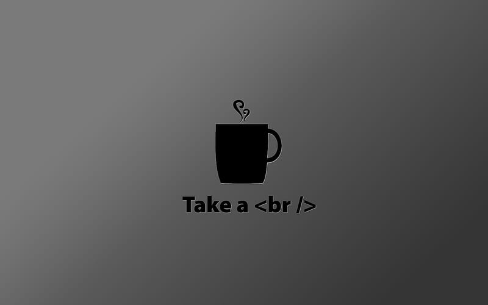

I miei hobby principali sono suonare il basso elettrico e scrivere codice, due attività molto diverse tra loro, ma che possono essere altrettanto appaganti. Suonare il basso richiede una certa abilità manuale e orecchio musicale, mentre scrivere codici richiede abilità di problem solving e logica.
Entrambe le attività possono aiutare a sviluppare la concentrazione e la creatività. Anche se all'apparenza queste attività sembrano lontane, entrambe richiedono pazienza e costanza per raggiungere la padronanza. Inoltre, entrambe le attività offrono l'opportunità di creare qualcosa di nuovo e personale, che può portare soddisfazione e orgoglio.
